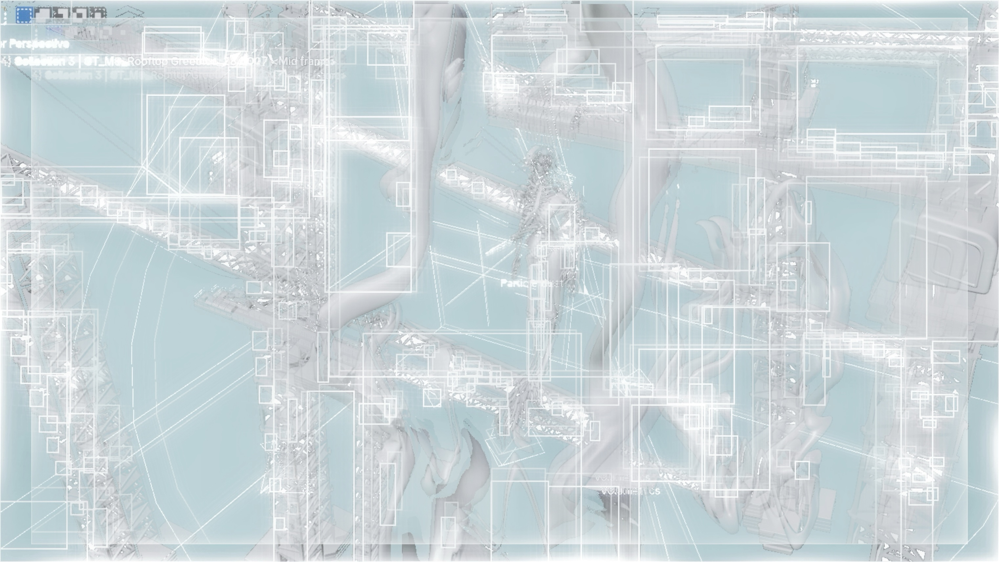

COL 12
MASTER FILE / FIA—00 OPEN ACCESS
全沉浸式末日脚本
TEST BOARD 01 / ACTIVE RECORD
ARTIFICIAL WAVES.

ENGLISH TRANSMISSION
In the mimetic domain, they drift passively along oscillatory trajectories, functioning as parametric models. Two conventional beams converge at the system’s periphery, provoking an anomalous, metastable standing wave—its frequency erratic, its amplitude misaligned. Time momentarily arrests at the locus of interference: at a low-probability resonance node, his crest and her trough become phase-inverted, instantaneously cancelling each other through destructive interference, resolving, momentarily, into zero amplitude.
The moon, coarse as a salt crystal, recedes into the damp night—even though its albedo is only 0.12. Within the fishing-light matrix, micro-deviations spiral unchecked—misread by her as another marine body. The surge breaches overhead before the background parameters, persistently amplified, surface as a necessary fault in the perturbation chain. Tolerance thresholds rupture; signs decouple, variables disintegrate, and the algorithm withdraws from its attempt to resolve the state.
Within the shadowed meridian between nautical dusk and dawn, the experimental models survey each other across a shared liminal horizon—engaging in self-preservation routines within data-stream blind spots, continually patching the fractures along the margins of error. In a fleeting moment, the mechanical light of the setting sun etches across the sea’s fault line. He turns and says:
“Perhaps, this time, we needn’t part again.”
中文转录
在拟态空间里，他们作为变量模型沿波动轨迹被动漂移；两股常规波束自边界相汇，诱发极罕见的非稳定驻波态，频率漂移，振幅错位；时间在靶心干涉点短暂冻结，在低概率的共振节点上，他的波峰与她的波谷相位互反，瞬时抵消，规整为零。
月亮如同一颗粗粝的盐，躲进夜里受潮，她误以为那是另一汪海，渔火通明……直至深海袭至头顶，他们是被扰乱秩序，误差被无限放大的实验参照；实验范围远超预期，符号的变动，因数的更迭都不再具备参考价值。
两个实验模型在航海晨昏蒙影线相互瞭望，在海的盲区自救，匆忙地拼凑自己的影子。瞬息间，机械落日的余晖填满海平面的缝隙，他调头过来说：
“要不这次，我们别再分开了。”